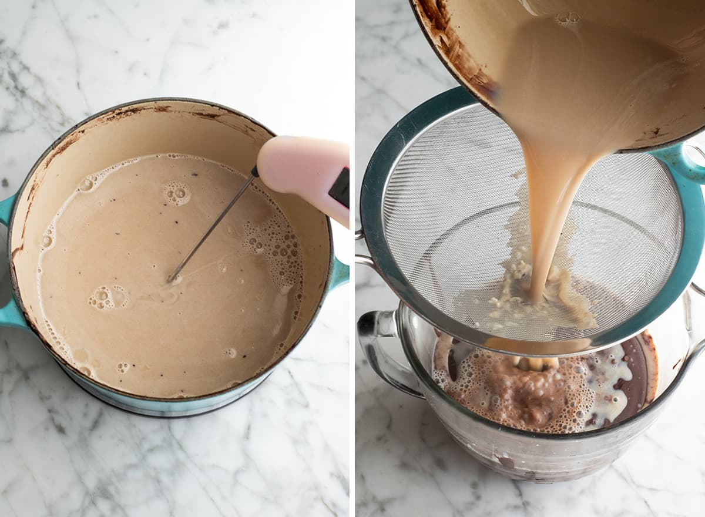

By Laura
, has a rich chocolate flavor and is just as good as any ice cream shop!")
Rich, ultra-creamy, and chocolatey — this is the best homemade chocolate ice cream recipe ever! It’s easy to make with only 7 ingredients (including two forms of chocolate), has a rich chocolate flavor and is just as good as any ice cream shop!
Here is the gear you will need to make this chocolate ice cream recipe!
Making this homemade chocolate ice cream recipe involves a few steps—plus some chilling and freezing—but it’s well worth the time it takes to make the best chocolate ice cream ever! We’ll walk through the process together step-by-step.
The first step in making this recipe is to make the chocolate base. Begin by whisking together the cream and cocoa powder. Bring the mixture to a boil. Reduce heat and boil/simmer for 30 seconds, whisking constantly.
Remove the chocolate/cream mixture from the heat and add chopped chocolate. Whisk until smooth. Add remaining cream and whisk to combine.
Transfer mixture to a large bowl and position a fine mesh strainer over it. This strainer will be used to strain the custard part of the chocolate ice cream recipe. It’s absolutely critical.
Next we will make the custard component of this chocolate ice cream recipe. To do this, we need to temper the eggs so they don’t cook when they’re added to the warm milk mixture. Begin by whisking the egg yolks together in a medium bowl.
Then, in a saucepan over medium heat, whisk together milk, sugar and sea salt. Once the milk mixture is slightly warm, add ½ cup of warm (not hot) milk to the beaten egg yolks and whisk to combine. Add the milk/egg mixture back into the saucepan, whisking as it’s being added.
Continue to cook the custard over medium heat, and stir the mixture constantly with a spatula until the it thickens and coats the spatula (it does this when it reaches about170 degrees F).
Pour the thickened custard through the metal strainer into the other ingredients in the bowl. Stir until combined. Discard any custard residue left on the strainer.
Add the vanilla and stir to combine. Place a lid on top and let the mixture chill in the refrigerator for at least 6 hours, or overnight.
Once the ice cream mixture is cooled to just below room temperature, churn it in an ice cream maker until thick and frozen (30-40 minutes).
,
has a rich chocolate flavor and is just as good as any ice cream shop!")
Transfer the chocolate ice cream to an airtight container and freeze for at least 6 hours.
Serve this chocolate ice cream on cones, in a dish, drizzled with chocolate syrup, with a dollop of fresh homemade whipped cream, etc.! Or, use it to stuff between two cookies to make the best homemade chocolate chip cookie ice cream sandwiches (like a chipwhich only so much better).